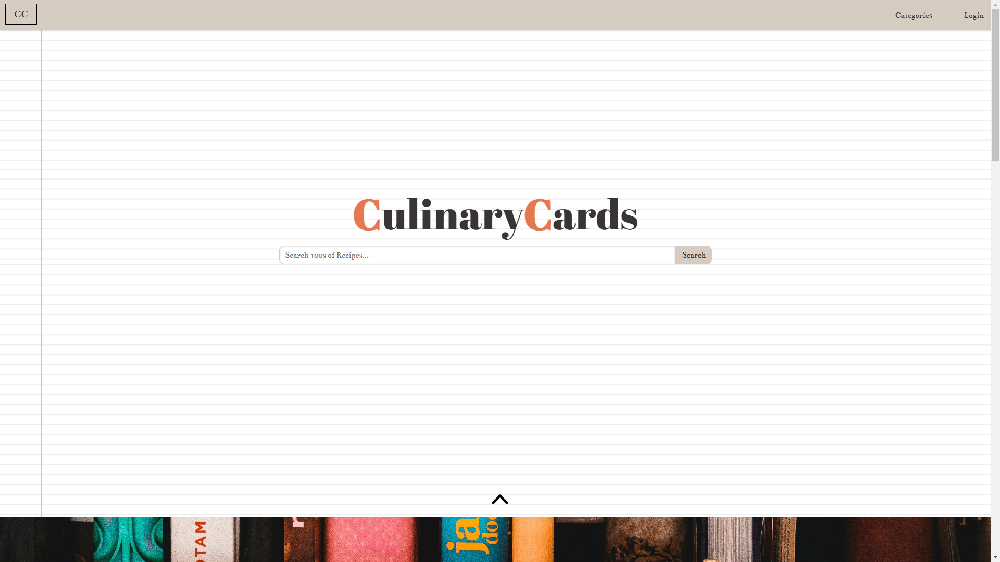

Culinary Cards
A recipe website created as a school project for Developing the Interactive Web
This website in unfortunately hosted on Render.com. This means that the website takes some time to spin up.
The data in the database also is wiped every month due to it being a free service. Render.com is able to do this
by storing our git repository information. After some time of inactivity, the website will spin down and the data
will be wiped from their servers. This is a great service for hosting a website for free, but it is not ideal for
a website that needs to store data for long periods of time.
The website is a recipe website that allows users to create, read, update, and delete recipes. The website is
built using HTML, CSS, and JavaScript. The website uses a Postgres SQL database to store the recipes. The backend
is hosted in Flask with a frontend css framework of PureCSS.
This website was an excellant learning experience for me. I learned how to use a SQL database, how to use a backend
server, and how to use a frontend framework. I also learned how to use git to push and pull code from a repository as
well as dealing with merge conflicts and other git issues. The project heavily relied on my groups teamwork and
communication skills. We got to work together to create the website and make sure that we were all on the same page.
We had weekly meetings to discuss what we had done and what we were going to do. We also had a group chat to discuss
any issues that we were having. This project was a great learning experience for me and I am glad that I was able to
work on it with such an amazing team!
Contact me for more information.
